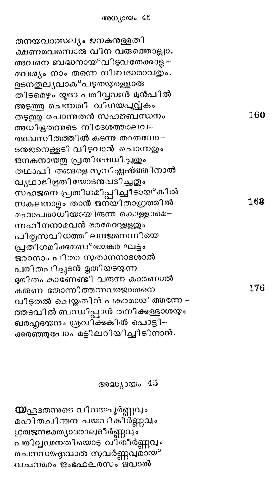

പ്രത്യാഗമനവും യാത്രാവിഘാതവും
സത്ൃത്തം അന്നനട
മിസര് ജനപദ പരിവ്വഡനുടെ
നീസര്ഗ്ഗൂരമ്ൃയമാം ദയാവിശേഷത്താല്
നസുവിസ്ളുത കലേശമനസ്തരായ* തത്ര
നിവസിച്ചാര് നിശി യിസഹ പത്രേന്മാർ
വിഭാതവേളയില് പുറപ്പെടാനുള്ള
വിഭാവനം ഭ്രാതൃഗണത്തിനുള്ളതായ?
വിഭാവരാലറിഞ്ഞതു മൂലം യൂസ്പന്
വിഭാവരി തന്നില് നിജ ഗൃഹേശനേ
വീളിച്ചു ചൊന്നിതു വിദേശ്യരാമിവര്
ഒവെളിച്ചമാവുമ്പോടം സ്വകീയദിക്കിന്നു
ഗമിച്ചിടുമതാലവരുടെ ചാക്കില്
നിറഠച്ചുകൊടംക നീ പിടിപ്പതു ധാന്യം.
അതാതു ചാക്കിനുള്ള താതിനു മൂല്യകം
സ്ഥിതമാക്കീടണം ഹിതാഹിതവേദിന്!
അതുവുമല്ലെടോ കനിഷ്ഷന്െറ ചാക്കില്
മദിയരാജതചഷകവും വയഃപൂ.
ഇതൊക്കെ രാത്രി നിറവ്യഹിച്ചകൊഠംക നാ
ഗതന്മാരാകട്ടെ വിദേശ്യര് ഗോസറ്റേ.
ഉപമഹീപതിയുരച്ച വാക്കുകഠം
ഉപഗതനായ നിയോജ്യന് കേട്ടടന്
സ്വപനഘട്ടത്തിന്നതീവമുന്തന്നേ
സപമരുഷമെല്ലാം ശരിപ്പെടുത്തിനാന്.
പ്രഭാതതേളയില് യകൂബപതത്രന്മാർ
സ്വവേശ*മകഷ്യത നിനച്ച വേഗത്തില്
എഴുന്നീററീടിനാര് സ്വപനഭാഗത്തോ-
ടുഴറിയാത്രയ്യം പറഞ്ഞു ഗയരവാല്.
ചുമഴുകളേന്തി ചെറുതാം തൂക്കത്തോ.-
ടമന്ദവൈരുധ്യഗതി തുടരുന്ന
കഴുതകളൊടും വിജ്ംഭണത്തിനാല്
കഴക്കം കാട്ടമമ്മയഗണത്തൊടും.
യഛഹൂദമുന്പന്മാര് നടക്കും വേളയില്
മഹീശഭത്യരിലൊരുവന് പെട്ടെന്നു
കടന്നവര് ഗതി തടുത്തു, മാറ്റത്തില്
വിടര്ന്നുവീണുള്ള വടവ്ൃക്ഷംപോലെ.
പലവിചാരവുമുറക്കി നു ബാധയും
കലര്ന്നു മറേറതോ ഭവനത്തെന്നപോല്
ചരിച്ചിടുമി സ്രേല്സുതർക്കീ രോധനം
സ*മരിക്കാതുള്ളൊരു പ്രഹരം പോലായി.
അടുത്തു വന്നൊരു ഭുതകനോത
നാന്
കടുത്തകമ്മമെന്തനുഷ്ടിച്ചു നിങ്ങടം ?
ഉപകാരം നീങ്ങഠംക്കധീശന് ചെയ്തതി'-
്നപകാരംകൊണ്ടോ പകരം വീളന്നു ?
യജമാനന് കുടിപ്പതിന്നും ലക്ഷണ
വചനമേോരുന്നു വിശിഷ്യ വിദ്യയ്ക്കും
ഉപകരിച്ചിടും ചഷാകതല്പജ-
മപഹാരരിച്ചിതു കഠിനമല്ലയോ ?
കനാനിലെ വിദ്ൃയയിതുതാനോ? മിസ്ര--
ജനപദത്തിതു ചിലവാകില്ലൊട്ടും.
കടുമൊഴിയിതു വി ദേശ്ൃയകര്ണ്ണത്തില്
കുടു കനല്ക്കട്ട ചൊരിഞ്ഞു രല്ക്ഷണം.
ഉടന് പരിഭ്രാന്തഹുദയമോടവര്
കിടുകിടുത്തേവം പറഞ്ഞു പ്രതൃൂക്തി:
അവിടുന്നീദദശം പറയ്യവതെന്താ--
ണടിയങ്ങളേവം പ്രവര്ത്തിക്കാതെല്ലം.
കഴിഞ്ഞ പ്രാവശ്യം ചുമടഴില് മൂല്യം ക--
ണ്ടുഴന്നിവിടതു പുനന്നയില്ചൊരു
പുഴുതികടം ഞങ്ങംം പ്രഭുവിന് കംസത്തെ
പിഴുക്കുമെന്നുണ്ടോ ഭവാനു തോന്നുന്നു ?
ജനനനാടം മുതലപഹ്ൃതിയെന്തെ-
ന൬൬നണുവുമുള്ളത്തിലറിഞ്ഞിടാതവര്
മമിമ്്ലുചരെന്നു മഹേച്ഛന് ചൊന്നതാല്
കലങ്ങി മാഴ*കുന്നു മനസ്സതരോവരം.
അതിനാല് ചാക്കെല്ലാ മഴിച്ചശോധിക്ക
തദാ വെളിവാകുമിവര് പരമാത്ഥം.
മറിച്ചൊരു ചാക്കില് ചഷകം കാണുകില്
മരിക്കട്ടായതിന്നുടമസ്ഥന് ക്ഷണം.
അതുവുമല്ലിവര് മുഴുവനും നാഥ-
ന്നടിമയായ*ക്കാലം കഴിക്കയും ചെയ്യാം.
യഥാത്ഥവാദികടം സധൈര്യമീവണ്ണം
കഥിച്ച നേരത്തു കഥയറിഞ്ഞുള്ള
ഭൂതകനോതിനാനെവനുടെ ചാക്കില്
വിധവിനൊത്തൊരാദൃതീയെഴും പാത്രം
അവിടെയെത്തിയ നിമിഷത്തിലവ -
രധിപതി മുന്പില് കമിഴ്ന്നു വീഴവേ
ഉരച്ചു യുഷഭന് കിമത്ഥം നിങ്ങളീ
വിരുദ്ധ ചേഷ്മിതം നടത്തി സാഹസാല്.
അതിന്നരച്ചിദം യഹൂദ: മല്പ്രഭോ!
വടിക്കവേണ്ട വാക്കറിയുന്നില്ല ഞാന്.
വളരെ വാക്കുകടം യഥാത്ഥമായിപ്പോഠരം
വചിക്കിലുമതു ഗ്രഹിക്കുകില്ലാര്യന്
തെളിവു ഞങ്ങഠംക്കി ന്നെതിരായ്ള്ളപ്പോരം
കളവാകം സത്യ വചസ്തുരയ്ക്കിലും
പരമേശന് ഞങ്ങഠംക്കെതിരായ ഞങ്ങടെ
ദുരിത സഞ്ചയം വിവ്ൃതമാക്കുവാന്
ഭവിച്ചതാണിതു പുരുവ്രജിനങ്ങഠം
കവിഞ്ഞുചെയ്ത പോയടിയങ്ങംം മുന്നം.
അതുനിമിത്തമായിരിക്കണ മിപ്പോഠം
മനസ്സറിയാതെ ഭവി ച്ചൊരിക്കഷ്ടം.
ഇതിന്നുവേണ്ടി നിന്നടിമകടം ഞങ്ങഠം
പതി നൊരുവരും ഭൃതിയോളം വിഭോ!
അധിഭത്താവുടന് മറുപടിയായി -
ട്ടിദമുരച്ച ഞാനതുചെയ്യാ ദൂഡം.
ഒരുവന് തെററിയാലവനെ യെന്നിയേ
പരരെ ശിക്ഷിക്ക പതിവില്ലൊട്ടമേ.
ഗമിച്ചു കൊള്ളവിന് സുഖേന നിങ്ങടെ
സുമര്തൃനാം താതന്നടുക്കലേവരും.
ചകഷകമോഷക നൊരുവനെയെനി--
ക്ടിമയായിങ്ങു കുടി കൊടംവാനുള്ള.
ഇസറയില് സുതര് സ്വമര്മ്മ വേധത്തി -
നസിയായുള്ളൊരിപ്പരിസ്ഡഗിരം
ശ്രവിച്ച പോതവര് പരസപരം നോക്കി--
ബ*ഭവിച്ച ഭുഃഖത്തേടടുരച്ചു മെല്ലവേ.
അവരജനിഹ നിബദ്ധനാവുന്ന--
തനുവദിക്കുവാന് കഴികയില്ലൊട്ടം
അവനെക്കൂടാതെ പിതൃമുഖം കാണ്മാ-൦
നെവന്നു സാധിക്കും സഹോദരര് നമ്മില് ?
അദന സാധനം ലഭിക്കുവാനന്-
പദവി കാണാഞ്ഞു കനിഷ്ഠനെത്താതന്
ഇവിടെപ്പോരുവാനനുവദിച്ചതാ--
ണപകടം വരില്ലിതി വിചാരത്താല്.
അരുമനുനുവാ മൊരുവന് നഷ്ടമായ*
വരികയാലിനി യിവനിലാണയ്യോ
തനയവാത്സല്യം ജനകനുള്ളതി
ക്ഷണമവന്നൊരു വിന വരുത്തൊല്ലാ.
അവനെ ബദ്ധനായ*വിടുവതേക്കാള -
മവശ്യം നാം തന്നെ നിബദ്ധരാവതും.
ഉടനതുല്യവാക*പടുതയുളെളാരു
തിടമെഴും യൂദാ പരിവ്വഡ൯ന് മുന്പില്
അടുത്തു ചെന്നതി വിനയപുവ്വകം
തടുത്തു ചൊന്നുതന് സഹജബന്ധനം
അധിഭൂതന്നുടെ നിദേശത്താലവ-൦
രൂുദവസിതത്തില് കടന്നു താതനോ-
ടനുജനെക്കൂടി വിടുവാന് ചൊന്നതും
ജനകനായതു പ്രതിഷേധിച്ചതും
തഥാപി തങ്ങളെ സുനിഷ്കഷത്തിനാല്
വ്യഥാഭിഭൂതിയോടനുവദിച്ചതും
സഹജനെ പ്രതിഗമിപ്പിചീടായ്*കില്
സകലനാളം താന് ജനയിതാഗ്രത്തില്
മഹാപരാധിയായിരുന്നു കൊള്ളാമെ-
ന്നഹീനനാമവന് ഭരമേററുള്ളതും
പിതരസവിധത്തിലനുജനെന്നിയെ
പ്രതിഗമിക്കമബ*ഭയങ്കര ഘട്ടം
ജരടനാം പിതാ നുതാനനാദശാൽല്
പരിതപിച്ചുടന് മൃതിയടയുന്ന
ഭുരിതം കാണേണ്ടി വരുന്ന കാരണാൽ
കരുണ തോന്നിത്തന്നവരജാതനെ
വിടുതല് ചെയ്തതിന് പകരമായ്*ത്തന്നേ -
തടവില് ബന്ധിപ്പാന് തനിക്കള്ളാശയും
ഖരഹൃദയനും ശ്രവിക്കുകില് പൊട്ടി-
ക്കരഞ്ഞുപോം മട്ടിലറിയിച്ചീടിനാന്.
